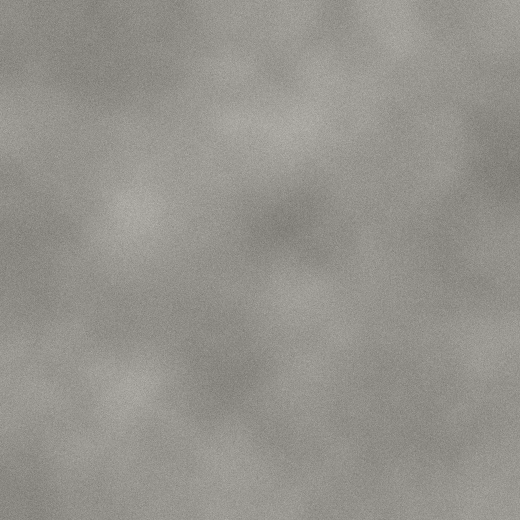
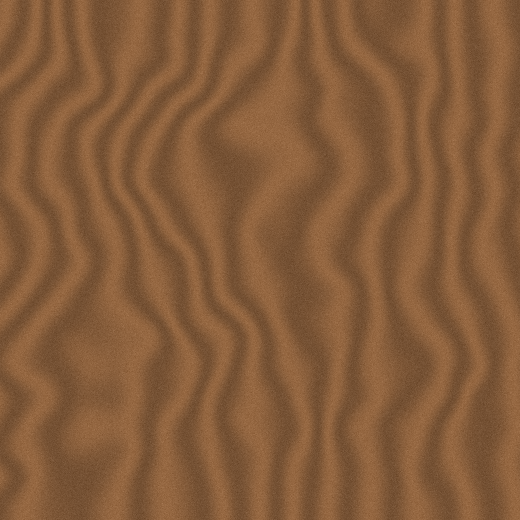
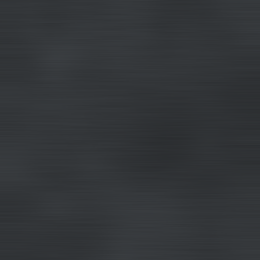
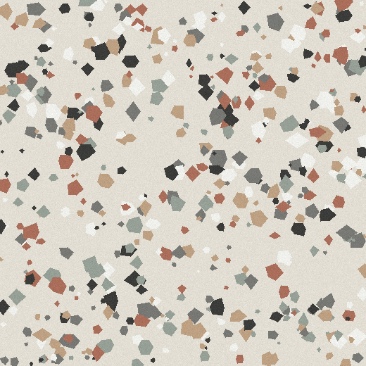
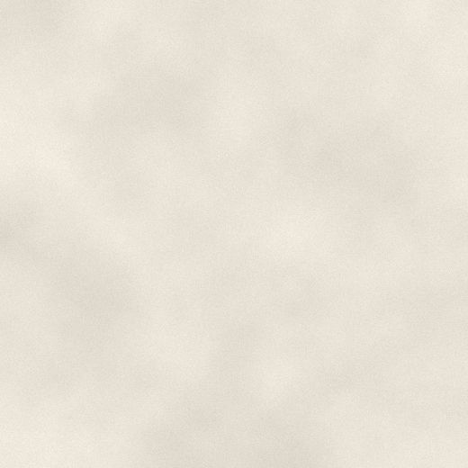
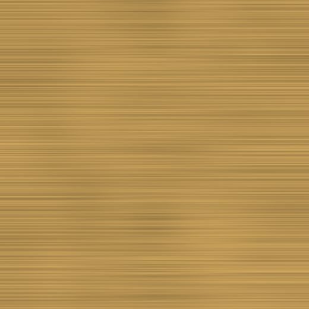
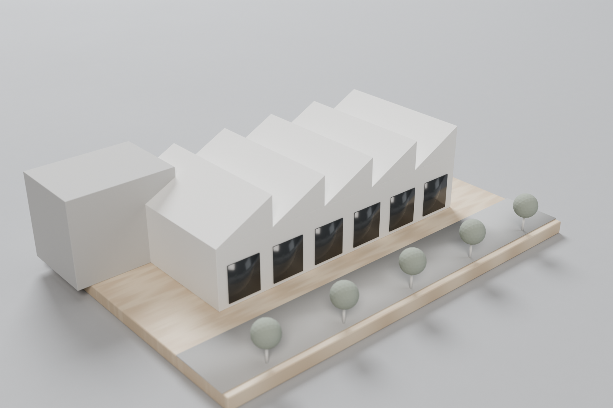

SolBéton ciré, teinte ciment naturel, finition mateM01

Comptoir, banquetteChêne massif huilé, lames 140 mmM02

Structure, garde-corpsAcier noirci, vernis matM03

Plan du comptoirTerrazzo, granulats locauxM04

Murs existantsEnduit à la chaux, teinte « grège »M05

Détails, luminairesLaiton brossé non verniM06

Maquette d’étude 1:100, carton plume et chêne
IntentionsGarder la halle lisible : la structure acier reste apparente, les ajouts sont en bois et en laiton.
Le sol continu en béton ciré relie la galerie et le café. Lumière du nord par les sheds, éclairage d’appoint chaud (2700 K).